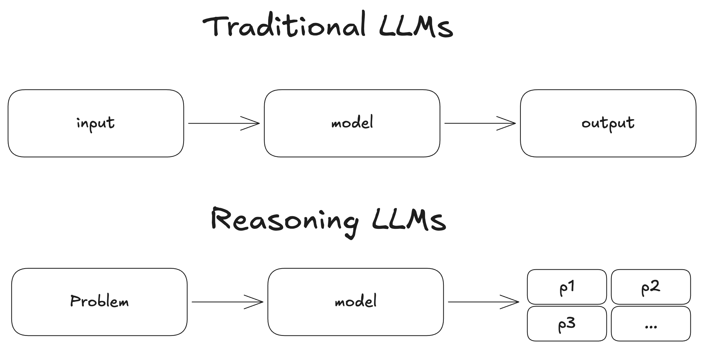
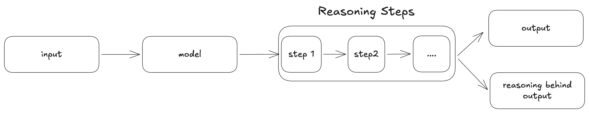
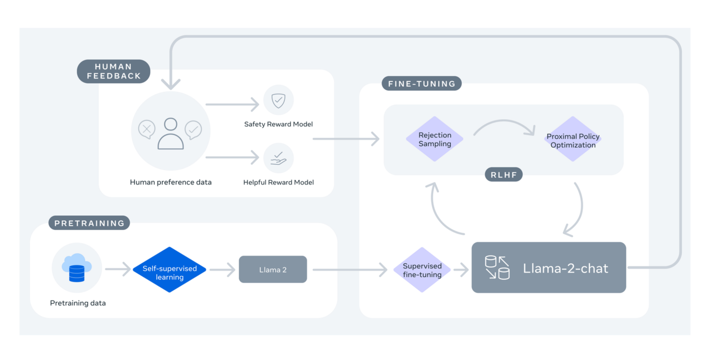
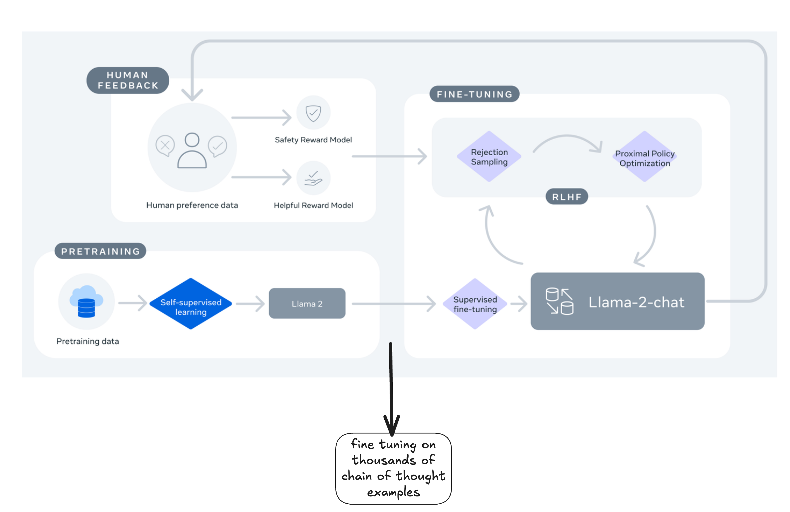
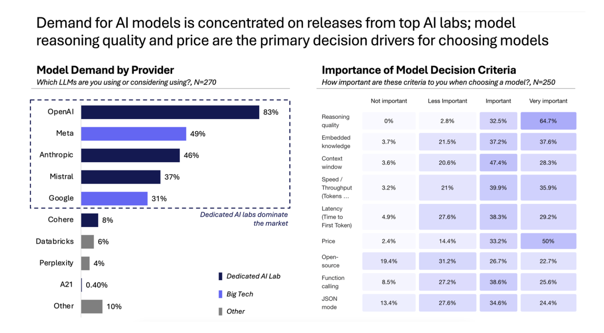
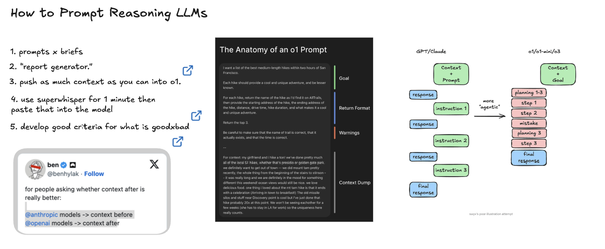
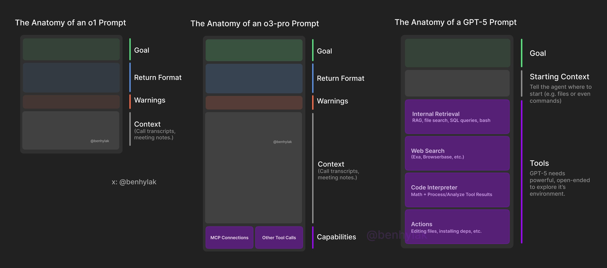
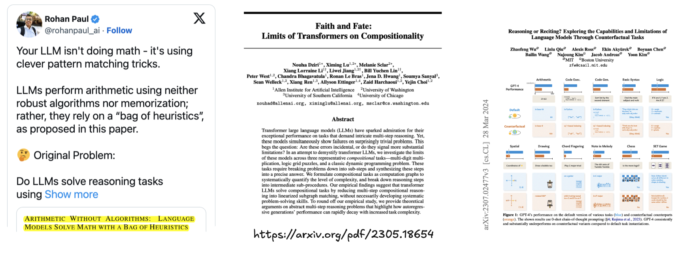

class: center, middle # Working with Reasoning Models ## How and when to use LLMs for thinking and reasoning ### Instructor: Lucas B. Nicolosi Soares --- # Agenda 1. What is a Reasoning LLM? -- 2. The Reasoning Model Landscape (2024–2026) -- 3. Theory Behind Reasoning & Test-Time Compute -- 4. Reasoning Models vs Traditional LLMs -- 5. Why use a Reasoning LLM? -- 6. When to use a Reasoning LLM? -- 7. How to Use a Reasoning LLM? (APIs & Techniques) -- 8. Limitations of Reasoning LLMs -- 9. Choosing a Reasoning LLM -- 10. Hands-on with Reasoning LLMs -- 11. From Benchmarks to Applications --- # What is a Reasoning LLM? <p></p> --- # How? -- <p></p> --- # How an LLM is Trained - Busy Person Guide <p></p> --- # How an LLM is Trained - Busy Person Guide <p></p> --- # What is a Reasoning LLM? - Language models designed for complex, multi-step problems -- - Generate intermediate reasoning steps or "thought processes" -- - Break down tasks into logical sub-steps -- - Similar to human step-by-step problem solving -- - **Key Insight**: Pretrained LLMs can already reason - if you decode properly! -- - More accurate and explainable results on challenging tasks: - Mathematical problems - Logic puzzles - Code debugging --- # The Reasoning Model Landscape (2024–2026) | Provider | Model | Release | Key Feature | |---|---|---|---| | OpenAI | o1 | Sep 2024 | First chain-of-thought reasoning model | | DeepSeek | R1 | Jan 2025 | Pure RL reasoning; published in *Nature* | | OpenAI | o3-mini | Jan 2025 | Faster reasoning; `reasoning_effort` levels | | Anthropic | Claude 3.7 Sonnet | Feb 2025 | Hybrid model: reasoning as togglable mode | | Alibaba | QwQ-32B | Mar 2025 | Open-source (Apache 2.0), 32B params | | Google | Gemini 2.5 Pro | Mar 2025 | `thinking_budget`, 2M context window | | OpenAI | o3 / o4-mini | Apr 2025 | Multimodal reasoning ("think with images") | | OpenAI | o3-pro | Jun 2025 | Highest-performance o-series variant | -- **Key trend**: Reasoning is becoming a standard feature of all frontier models, not a separate product line. --- # The Landscape: What Changed? -- - **Reasoning is now infrastructure**, not a separate product - Claude 4: extended thinking is a toggle, not a different model - GPT-5.2: reasoning effort is just another parameter -- - **Open-source caught up**: DeepSeek-R1 and QwQ-32B match or rival proprietary models -- - **Multimodal reasoning**: o3 can "think with images" — crop, zoom, rotate during reasoning -- - **Deprecations**: `o1-preview` and `o1-mini` deprecated April 2025, replaced by o3/o4-mini -- - **Price drops**: o3 dropped 80% in price by June 2025 ($2/$8 per million tokens) --- # Theory Behind Reasoning ## Why Intermediate Steps Matter -- - **Circuit Complexity**: Problems of circuit size T require O(T) intermediate tokens -- - **Serial Processing**: Constant-size transformers solve complex problems through serialization -- - **Direct vs Step-by-Step**: Direct answer generation may fail without intermediate reasoning -- - **Thinking Budget**: Performance scales with output length, not just model size -- - **Justification**: This explains why "let it think longer" improves accuracy --- # The Big Paradigm Shift: Test-Time Compute Scaling -- - **Old paradigm**: Scale training compute -> bigger models -> better answers -- - **New paradigm**: Scale inference compute -> more thinking time -> better answers -- - Three forms of test-time compute: -- 1. **Internal reasoning budgets** (thinking tokens) -- 2. **Parallel sampling** (best-of-N, self-consistency) -- 3. **Sequential refinement** (critique -> revise loops) -- - **Why it matters**: You can now dial reasoning depth *per-query*, trading cost for accuracy programmatically -- - This is the single most important shift in LLM capability since scaling laws --- class: center, middle # Q&A & Break --- class: center, middle # Reasoning Models vs Traditional LLMs --- ## Traditional LLMs - Direct pattern-based prediction -- - One-shot "I'm feeling lucky" approach -- - Quick but less reliable on complex tasks -- - No explicit reasoning steps ## Reasoning LLMs -- - Step-by-step problem solving -- - Chain-of-thought (CoT) approach -- - More methodical but slower -- - Shows intermediate steps -- - **Decoding matters**: Not just prompting, but how we sample and select --- class: center, middle # Q&A & Break --- # Key Capabilities of Reasoning LLMs 1. __Chain-of-Thought Reasoning__ -- - Internal dialogue approach -- - Step-by-step problem solving -- - "Thinking aloud" in text -- - **Beyond prompting**: CoT as a decoding strategy -- 2. __Self-Consistency__ -- - Verifies own answers -- - Revisits problematic solutions -- - **Key**: Marginalizing over reasoning paths via sampling -- 3. __Structured Outputs__ -- - Organized reasoning steps -- - Numbered thoughts -- - Traceable calculations --- # Advanced Decoding Strategies ## From Prompting to Decoding -- 1. **Multi-Sample Generation** - Generate multiple candidate solutions - Not just greedy decoding -- 2. **Confidence-Based Selection** - Pick most confident answer, not longest rationale - Answer confidence correlates with correctness -- 3. **Self-Consistency Voting** - Sample multiple paths - Majority vote on final answer - Approximates marginalization -- 4. **Universal Self-Consistency** - Extends beyond single-number answers - Models self-select most consistent response - Works for free-form outputs --- class: center, middle # Why use a Reasoning LLM? --- <div style="margin-top: 100px;"> <p></p> </div> <p style="font-size: 14px; margin-left: 0px"> <a href='https://artificialanalysis.ai/'>Artificial Analysis AI Review</a> </p> --- class: center, middle # When to use a Reasoning LLM? --- # When to use a Reasoning LLM? - Background tasks where latency isn't critical -- - Complex problems requiring deeper thinking -- - Tasks benefiting from extensive reasoning -- - Research and planning-heavy workflows -- - **When you can verify**: Tasks with auto-verifiable outputs --- ## Ideal Use Cases -- - **Complex Problem Solving** - Mathematical proofs - Logic puzzles - Multi-step reasoning -- - **Deep Analysis** - Research papers - Document analysis - Meeting notes interpretation -- - **Planning & Agency** - Workflow planning - Agentic systems - Strategic decision-making -- - **Retrieval + Reasoning** - RAG with reasoning chains - Evidence-based analysis - Multi-document synthesis --- ## Practical Applications -- - **Data Analysis** - Medical diagnostics - Complex data interpretation - Anomaly detection -- - **Background Processing** - Batch processing workflows - Overnight analysis jobs -- - **Evaluation Tasks** - LLM as judge (with confidence scoring) - Quality assessment - Verification workflows --- class: center, middle # Q&A & Break --- # How to Use a Reasoning LLM? --- # The Three Major APIs for Reasoning Every major provider now offers **controllable reasoning depth**: -- | Provider | Parameter | Values | Default | |---|---|---|---| | **OpenAI** | `reasoning.effort` | `low`, `medium`, `high` | `medium` | | **Anthropic** | `thinking.budget_tokens` | 1,024 – max_tokens | — | | **Anthropic (4.6+)** | `thinking.effort` | like OpenAI | — | | **Google** | `thinking_budget` | 128 – 32,768 (or `-1`) | 8,192 | -- **The convergence**: All labs are moving toward the same abstraction — a "thinking effort" dial that trades cost/latency for accuracy. --- # OpenAI Responses API — Reasoning Effort ```python from openai import OpenAI client = OpenAI() response = client.responses.create( model="o3", reasoning={"effort": "high"}, # low | medium | high input=[ {"role": "developer", "content": "You are a math tutor."}, {"role": "user", "content": "Prove that sqrt(2) is irrational."} ] ) print(response.output_text) ``` -- - `reasoning_effort`: `low`, `medium` (default), `high` - Reasoning tokens preserved across multi-turn calls - "Reasoning summaries" available for debugging (no extra cost) - o4-mini: $1.10/M input, $4.40/M output (~10x cheaper than original o3) --- # OpenAI Responses API — GPT-5.2 ```python # GPT-5.2 also supports reasoning effort response = client.responses.create( model="gpt-5.2", reasoning={"effort": "medium"}, input=[ {"role": "developer", "content": "Analyze this code."}, {"role": "user", "content": code_snippet} ] ) ``` -- - GPT-5.2 integrates reasoning natively — no separate "o-series" needed - `reasoning_effort` values: `none`, `low`, `medium`, `high`, `xhigh` - The Responses API is **replacing the Assistants API** as OpenAI's primary interface --- # Anthropic Extended Thinking API ```python from anthropic import Anthropic client = Anthropic() response = client.messages.create( model="claude-sonnet-4-5-20250514", max_tokens=16000, thinking={ "type": "enabled", "budget_tokens": 10000 # min 1,024 }, messages=[{"role": "user", "content": "Solve step by step..."}] ) # Response contains both thinking and text blocks for block in response.content: if block.type == "thinking": print("Thinking:", block.thinking) elif block.type == "text": print("Answer:", block.text) ``` -- - `budget_tokens`: How much thinking to allow (min 1,024, must be < `max_tokens`) - Thinking blocks are separate from text blocks in the response - Claude Opus 4.6 / Sonnet 4.6: Use `effort` parameter instead of `budget_tokens` --- # Google Gemini 2.5 — Thinking Budget ```python from google.generativeai import GenerativeModel model = GenerativeModel("gemini-2.5-pro") response = model.generate_content( "What is the probability of drawing a flush in poker?", generation_config={ "thinking_config": {"thinking_budget": 8192} } ) ``` -- - `thinking_budget`: 128–32,768 tokens (default 8,192) - Set to `-1` for dynamic auto-scaling based on query complexity - Set to `0` to disable thinking entirely - **2M token context window** — largest among reasoning models --- # Agentic Reasoning: Think -> Act -> Observe -> Think The new standard pattern for autonomous agents: -- ``` +----------+ +----------+ +----------+ +----------+ | Think |--->| Act |--->| Observe |--->| Think | |(internal)| |(tool use)| |(results) | | (refine) | +----------+ +----------+ +----------+ +----------+ ``` -- - **Anthropic's "Think" tool**: An explicit tool call that lets Claude pause and reason mid-task -- - **Interleaved thinking** (Claude 4): Alternate between thinking blocks and tool calls - Enable with beta header `interleaved-thinking-2025-05-14` -- - **OpenAI o3/o4-mini**: Natively use web search, code execution, image generation within the chain of thought -- - **This is the future**: Reasoning *within* a tool-use loop, not reasoning *then* acting --- # Core Techniques for Reasoning LLMs ## 1. Decoding-Based Chain-of-Thought ```python def cot_decode(prompt, model, n_samples=5): candidates = [] for _ in range(n_samples): response = model.generate(prompt, temp=0.7) answer = extract_answer(response) confidence = model.score_answer(response, answer) candidates.append((response, answer, confidence)) # Select by confidence, not length! best = max(candidates, key=lambda x: x[2]) return best[0] # Return full reasoning ``` -- **Key**: Sample multiple candidates, select by answer confidence --- # Core Techniques for Reasoning LLMs ## 2. Self-Consistency Pattern ```python def self_consistency(prompt, model, n_samples=10): answers = [] for _ in range(n_samples): response = model.generate(prompt, temp=0.5) answer = extract_answer(response) answers.append(answer) # Majority voting from collections import Counter votes = Counter(answers) return votes.most_common(1)[0][0] ``` -- **Key**: Marginalize over reasoning paths via voting --- # Core Techniques for Reasoning LLMs ## 3. Thinking Budget Control ```python def controlled_reasoning(prompt, model, thinking_tokens=500): config = { "max_thinking_tokens": thinking_tokens, "reasoning_mode": "serial", "intermediate_outputs": True } response = model.generate(prompt, **config) return response ``` -- **Key**: Scale output length as a first-class parameter -- - More tokens = deeper reasoning - Trade latency for accuracy - Monitor cost implications --- # Advanced Techniques ## 1. Analogical Reasoning ```python prompt = """ Problem: [Current problem] First, recall a similar problem you've solved: 1. Identify the pattern 2. Retrieve analogous solution 3. Adapt to current context Now solve step by step... """ ``` -- ## 2. Abstraction - "Take a Step Back" ```python prompt = """ Before solving, step back and consider: - What type of problem is this? - What are the key principles? - What strategy should I use? Now proceed with the solution... """ ``` --- # Aggregation Strategies ## Beyond Simple Voting -- 1. **Confidence-Weighted Selection** ```python weighted_answer = max(candidates, key=lambda x: x.confidence * x.consistency) ``` -- 2. **Universal Self-Consistency** ```python # For free-form outputs best = model.select_most_consistent(candidates) ``` -- 3. **Hierarchical Aggregation** ```python # Group similar reasoning paths clusters = cluster_by_approach(candidates) best_cluster = max(clusters, key=cluster_confidence) ``` -- **Remember**: Aggregation consistently outperforms one-shot --- <p></p> <p style="font-size: 14px; margin-left: 0px"> <a href=''></a> </p> --- class: center, middle # How to Prompt GPT-5? <p></p> <p style="font-size: 14px; margin-left: 0px"> <a href='https://www.latent.space/p/gpt-5-review'>GPT-5 Hands-On: Welcome to the Stone Age</a> </p> --- # Prompting Best Practices for Reasoning Models -- ## What's Different - **Don't over-prompt CoT**: "Think step by step" is redundant — the model handles reasoning internally -- - **Be explicit about the task**: Clear problem framing matters more than CoT triggers -- - **Think in briefs, not prompts**: Goal + Return Format + Constraints + Context -- ## Provider-Specific Tips -- - **OpenAI (o3 / GPT-5.2)**: Use `developer` role for system instructions. Place context after the request. -- - **Anthropic (Claude)**: Place context before the request. Use `budget_tokens` to control depth. -- - **For simple tasks**: Use `reasoning_effort: "low"` or disable thinking entirely — saves cost and avoids overthinking --- class: center, middle # Q&A & Break --- # Limitations of Reasoning LLMs -- ## 1. Performance Trade-offs - **Increased latency**: Extended thinking process leads to significantly longer response times -- - **Higher resource requirements**: Often require more computational resources -- - **Cost implications**: More tokens and processing time translate to higher operational costs -- - **Scalability challenges**: Multiple concurrent requests become more resource-intensive --- # Limitations of Reasoning LLMs ## 2. Reasoning Quality Constraints - **Domain-specific limitations**: Performance varies considerably across different subject areas -- - **Brittleness with novel problems**: May struggle with problem types not encountered during training -- - **Inconsistent depth of reasoning**: Quality of reasoning can vary within the same model -- - **Over-confidence in incorrect reasoning**: May present flawed reasoning with high confidence --- # Limitations of Reasoning LLMs ## 3. Knowledge and Context Limitations - **Bounded knowledge**: Limited to training data available at model development time -- - **Context window constraints**: Struggle with very lengthy problems despite large context windows -- - **Information integration challenges**: Difficulty maintaining coherence across extensive reasoning chains -- - **Limited transfer learning**: Reasoning in one domain doesn't always transfer to other domains --- # Limitations of Reasoning LLMs ## 4. Training and Deployment Challenges -- - **Prompting vs Fine-tuning Trade-offs** - Few-shot CoT: Simple but brittle - SFT: Often fails to generalize - RL: Requires reliable verifiers -- - **Verifier Dependency** - Success hinges on verifier quality - Auto-verification only possible for some tasks - Human verification doesn't scale -- - **Decoding-Objective Mismatch** - Model's next-token distribution != user goals - Probabilistic outputs vs deterministic needs - Requires careful aggregation strategies --- ## Limitations of Reasoning LLMs <p></p> <p style="font-size: 14px; margin-left: 0px"> <a href='https://arxiv.org/pdf/2305.18654'>Dziri et al. (2023)</a> </p> <p style="font-size: 14px; margin-left: 0px"> <a href='https://arxiv.org/pdf/2307.02477'>Wu et al. (2024)</a> </p> --- # New Research Findings on Limitations -- ## Token Overhead - One study found reasoning models use **1,953% more tokens** than standard models for equivalent simple answers - For simple tasks, reasoning is pure overhead with no accuracy benefit -- ## Inverse Compute-Performance (Anthropic, July 2025) - For some tasks, **longer reasoning hurts accuracy** - More thinking != always better — calibration matters -- ## Faithfulness of Chain-of-Thought (Anthropic, July 2025) - "Reasoning models don't always say what they think" - Visible CoT may **not faithfully represent** the model's actual computation - **Implication**: Don't blindly trust CoT as a debugging or interpretability tool -- ## DeepSeek-R1 Insight - Pure RL (no supervised fine-tuning on reasoning traces) can produce sophisticated reasoning - "Aha moments" emerge spontaneously — models learn to re-examine and verify conclusions --- class: center, middle # Q&A & Break --- # Choosing a Reasoning LLM ## The Current Landscape (2026) -- | Model | Strengths | Pricing (per M tokens) | |---|---|---| | **o3** | Multimodal reasoning, tool use | $2 in / $8 out | | **o4-mini** | Cost-efficient, full tool use | $1.10 in / $4.40 out | | **GPT-5.2** | Integrated reasoning + chat | Responses API pricing | | **Claude Sonnet 4.5** | Hybrid thinking, 128K output | $3 in / $15 out | | **Gemini 2.5 Pro** | 2M context, dynamic budget | Competitive | | **DeepSeek-R1** | Open weights, strong math | Very low cost | | **QwQ-32B** | Open-source, runs locally | Free (Apache 2.0) | --- # Choosing a Reasoning LLM ## Key Selection Criteria -- ### Core Capabilities - [ ] Built-in verifier support - [ ] Efficient multi-sample decoding - [ ] Configurable thinking budget / effort level - [ ] Self-consistency mechanisms -- ### Integration Features - [ ] RAG integration quality - [ ] API support for confidence scores - [ ] Streaming intermediate steps - [ ] Batch processing capabilities -- ### Training Approach - [ ] Prompted reasoning vs fine-tuned - [ ] RL-finetuned with verifiers - [ ] Domain-specific adaptations - [ ] Transfer learning capabilities --- # Choosing a Reasoning LLM (cont.) ## Cost vs Performance Trade-offs -- ### Cost Considerations - Token usage (thinking + output) - Sampling overhead (n-samples) - Latency requirements - Batch vs real-time pricing -- ### Performance Metrics - Accuracy on your specific tasks - Consistency across samples - Verifiability of outputs - Explanation quality -- ### Practical Factors - API rate limits - Context window size (Gemini: 2M, Claude: 200K, OpenAI: 200K) - Output format control - Open-source vs proprietary (QwQ-32B and DeepSeek-R1 run locally) --- class: center, middle # Hands-on with Reasoning LLMs --- # Lab 1: OpenAI Responses API — Reasoning Effort .small-code[ ```python from openai import OpenAI from collections import Counter client = OpenAI() def compare_reasoning_effort(question): """Compare low vs high reasoning effort on the same question""" for effort in ["low", "medium", "high"]: response = client.responses.create( model="o3", reasoning={"effort": effort}, input=[{"role": "user", "content": question}] ) print(f"--- Effort: {effort} ---") print(f"Answer: {response.output_text[:200]}") print(f"Usage: {response.usage}") print("-" * 60) compare_reasoning_effort( "How many r's are in the word 'strawberry'?" ) ``` ] --- # Lab 2: Anthropic Extended Thinking .medium-code[ ```python from anthropic import Anthropic client = Anthropic() def solve_with_thinking(question, budget=10000): """Solve a problem with visible thinking process""" response = client.messages.create( model="claude-sonnet-4-5-20250514", max_tokens=16000, thinking={"type": "enabled", "budget_tokens": budget}, messages=[{"role": "user", "content": question}] ) for block in response.content: if block.type == "thinking": print(f"Thinking ({len(block.thinking)} chars):") print(block.thinking[:500] + "...") elif block.type == "text": print(f"\nAnswer: {block.text}") solve_with_thinking( "A farmer has 17 sheep. All but 9 die. How many are left?" ) ``` ] --- # Lab 3: Retrieval + Reasoning Chain .small-code[ ```python def rag_with_reasoning(query, documents): """Combine retrieval with chain-of-thought reasoning""" # Step 1: Retrieve relevant context relevant_docs = retrieve_documents(query, documents, top_k=3) # Step 2: Construct reasoning prompt with evidence prompt = f""" Question: {query} Available Evidence: {format_documents(relevant_docs)} Please: 1. Analyze the evidence step by step 2. Identify key information 3. Reason through the problem 4. Provide your conclusion Let's think step by step: """ # Step 3: Generate reasoning with retrieval context response = generate_with_cot(prompt) # Step 4: Verify answer against evidence verification = verify_against_sources(response, relevant_docs) return { 'answer': response, 'sources': relevant_docs, 'verification': verification } ``` ] --- # Practical Demo: Numeric Puzzle with Meta-Strategies .small-code[ ```python def numeric_puzzle_with_meta_reasoning(target): """Demonstrate explicit meta-strategies in reasoning""" prompt = f""" Target number: {target} Meta-strategy thinking: 1. First, consider factorization of {target} 2. Check if it's prime or composite 3. If composite, find factors near sqrt({target}) = {int(target**0.5)} 4. Consider arithmetic patterns Now solve step by step using these strategies: """ # Generate with explicit thinking mode response = model.generate( prompt, thinking_mode="explicit", max_thinking_tokens=1000, show_meta_reasoning=True ) return { 'meta_strategy': extract_meta_strategy(response), 'detailed_steps': extract_steps(response), 'final_answer': extract_answer(response) } # Example usage result = numeric_puzzle_with_meta_reasoning(143) print(f"Meta-strategy: {result['meta_strategy']}") print(f"Solution: {result['final_answer']}") ``` ] --- class: center, middle # From Benchmarks to Applications ## Moving Beyond Single-Answer Tasks --- # Beyond Benchmarks: Real-World Applications -- ## Current State: Benchmark Saturation - AIME, GPQA Diamond now routinely saturated by frontier models - New harder evaluations needed (e.g., Humanity's Last Exam) - Focus shifting to real applications -- ## Building Production Systems -- 1. **Custom Verifiers** - Domain-specific evaluation - Business logic validation - Safety and compliance checks -- 2. **Human-in-the-Loop** - Confidence thresholds for escalation - Explanations for decision support - Iterative refinement workflows -- 3. **Composite Reasoning Systems** - Multiple models with different strengths - Ensemble approaches - Specialized verifiers per domain --- # Future Directions ## North Star: Reasoning for Real Problems -- ### Near-term Opportunities - **Medical Diagnosis**: Multi-step differential diagnosis - **Legal Analysis**: Case law reasoning with citations - **Scientific Research**: Hypothesis generation and testing - **Software Engineering**: Architecture decisions with trade-offs -- ### Key Enablers - **Better Verifiers**: Moving beyond correctness to usefulness - **Efficient Decoding**: Reducing cost of multi-sample approaches - **Domain Adaptation**: Fine-tuning for specific reasoning patterns - **Explainability**: Making reasoning traces useful for humans -- ### The Path Forward - Reasoning + Tools + Retrieval (agentic reasoning) - Continuous learning from feedback - Reasoning about reasoning (meta-cognition) --- # Key Takeaways -- 1. **Test-Time Compute is the Paradigm Shift**: Scale thinking time per-query, not just model size -- 2. **Every Lab Has Reasoning Now**: OpenAI, Anthropic, Google, DeepSeek — reasoning is standard -- 3. **Use the Effort Dial**: `low` for simple tasks, `high` for hard ones — don't overspend -- 4. **Aggregation Wins**: Multiple samples + smart selection consistently beats single-shot -- 5. **CoT is Not Always Faithful**: Don't blindly trust visible reasoning traces -- 6. **Agentic Reasoning is the Future**: Think -> Act -> Observe -> Think loops -- 7. **Combine Approaches**: Retrieval + Reasoning > Reasoning alone -- 8. **Real Applications Need More**: Move beyond benchmarks to production systems --- # Connect With Me ## [Course materials](place-github-url) ## [LinkedIn](https://www.linkedin.com/in/lucas-soares-969044167/) ## [Twitter/X](https://x.com/LucasEnkrateia) ## [YouTube](https://www.youtube.com/@automatalearninglab) ## Email: lucasenkrateia@gmail.com ### References - Stanford CS-25: Reasoning with LLMs - Dziri et al. (2023) - Faith and Fate: Limits of Transformers on Compositionality - Wu et al. (2024) - Reasoning or Reciting? Exploring the Capabilities and Limitations - DeepSeek-R1 (2025) - Incentivizing Reasoning in LLMs via RL (published in *Nature*) - Anthropic (2025) - "Reasoning models don't always say what they think" - OpenAI (2025) - o3/o4-mini System Card & Responses API Documentation ---